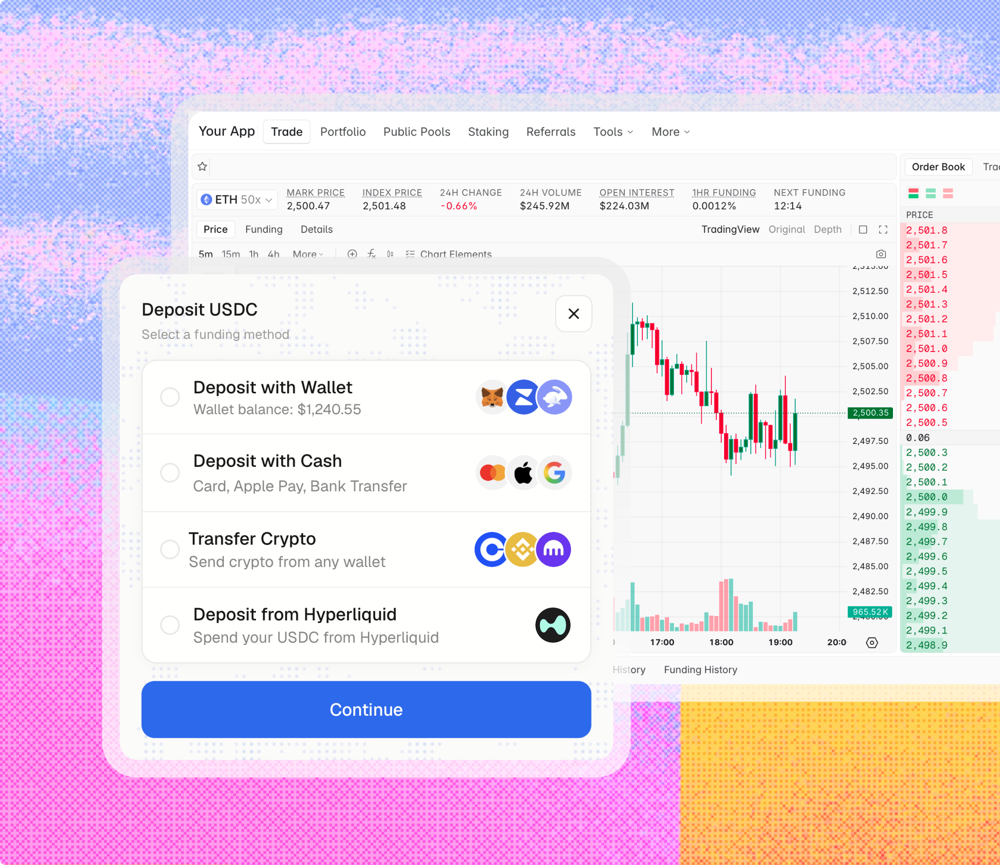
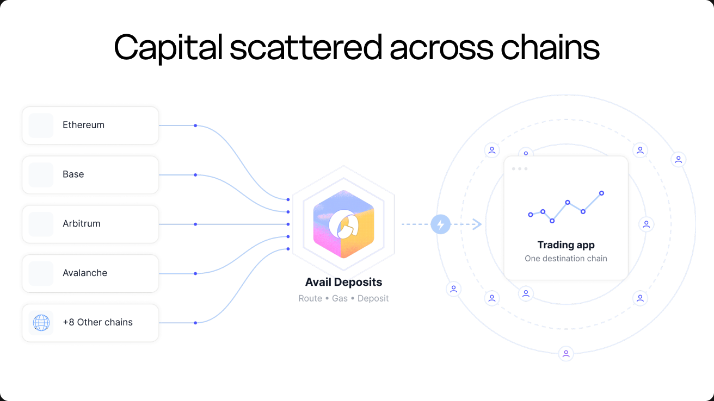
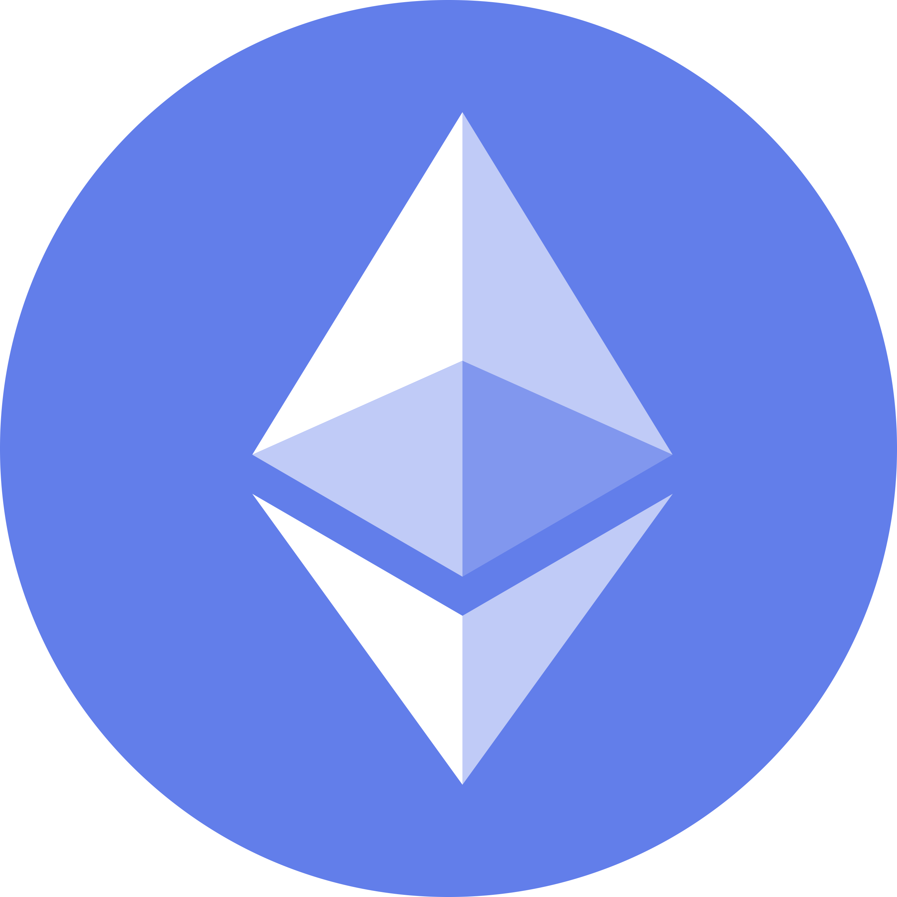
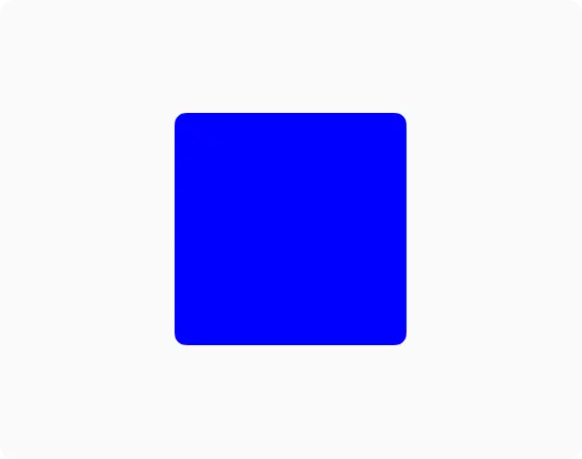
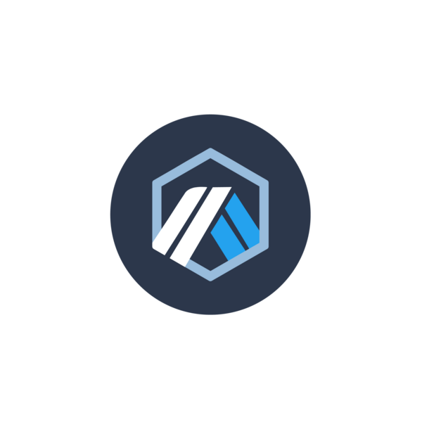
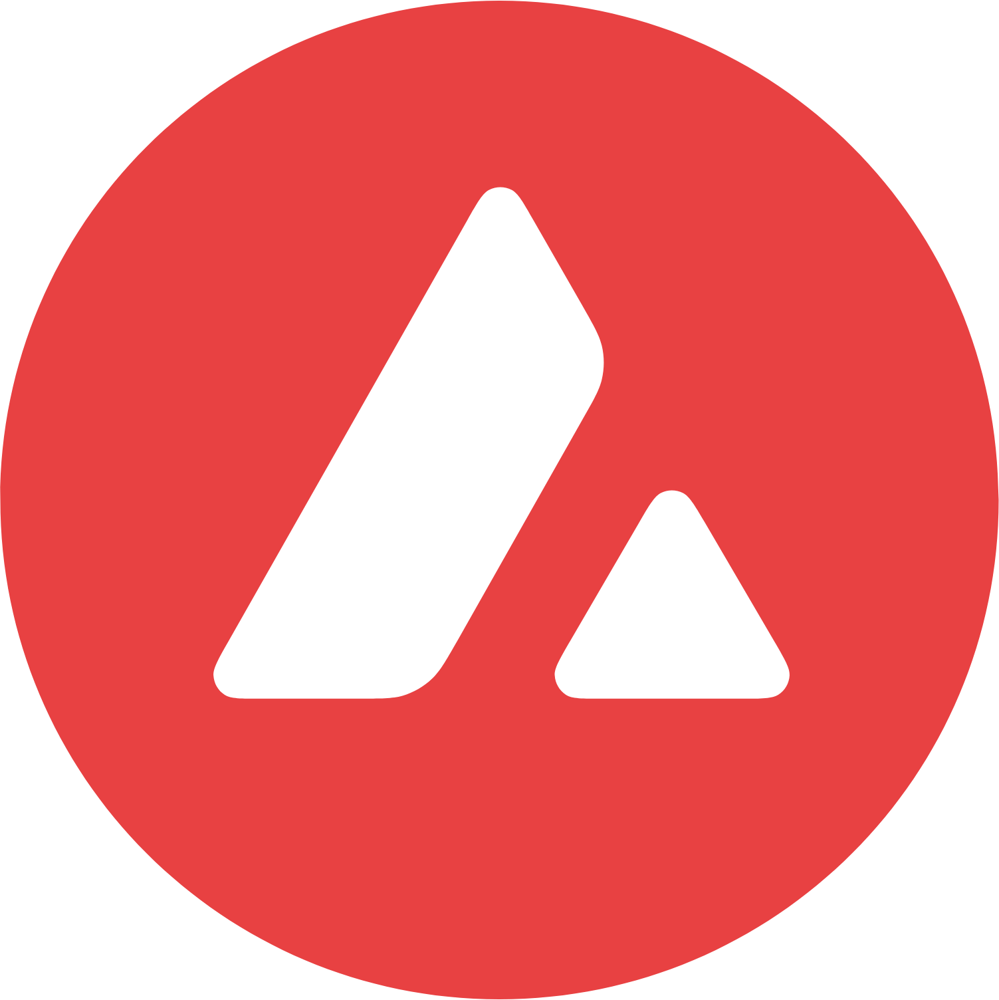
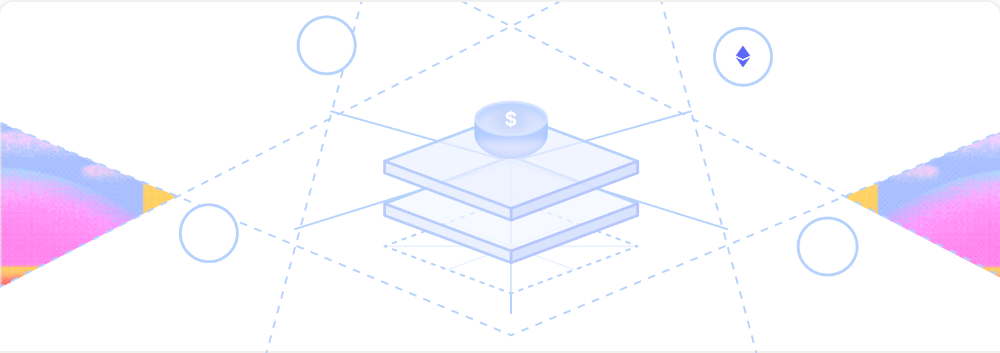
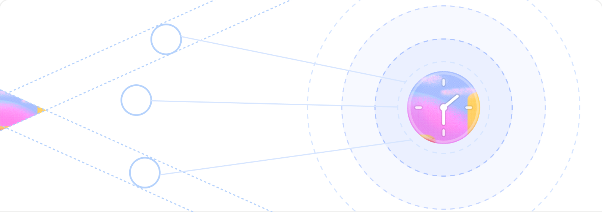

Convert more high-intent traders
Keep users inside the funding journey instead of sending them to external bridges and swaps.
Let traders fund your app using assets across supported chains, on-ramps or QR deposits, without leaving to bridge, swap, switch networks or find gas.

Deposit infrastructure that gets users funded and ready to trade.
A trader can arrive with funds spread across different chains and tokens, while your platform accepts one collateral asset on one destination chain.
When traders leave your app to bridge, swap or find gas, every handoff creates another chance for the deposit to be delayed, reduced or abandoned.





Keep users inside the funding journey instead of sending them to external bridges and swaps.

Allow eligible balances across supported chains and assets to contribute to the deposit.

Move users from discovering a market to participating through one embedded funding flow.
Remove common questions around networks, gas, required assets, deposit amounts and funding methods.
Traders see eligible balances across supported chains in one view. They enter what they want to spend or what the app needs to receive, while the flow handles routing, gas and deposit completion.

More eligible user capital can contribute to the deposit.

The trader enters what they want to spend and the flow calculates the destination amount.

The trader enters the exact amount the app needs to receive. The flow finds the best route across eligible balances and calculates the required input.

Gas required to successfully complete the transaction is handled in the flow.

Let users fund through supported fiat payment methods inside the app experience.
Give users a supported path from crypto balances back to fiat.

Let users scan a QR code or send to a deposit address from an external wallet or exchange.

The deposit remains inside the trading app experience.
Choose the destination chain and asset, define source coverage, match the interface to your design system and add the widget to your frontend.

Configure the deposit experience around your destination chain, collateral asset and user funding preferences.
Traders see eligible balances across supported chains in one view. They enter what they want to spend or what the app needs to receive, while the flow handles routing, gas and deposit completion into your single destination chain and collateral asset.
With exact-in, the trader enters what they want to spend and the flow calculates the destination amount. With exact-out, the trader enters the exact amount the app needs to receive; the flow finds the best route across eligible balances and calculates the required input.
Yes. On-ramp lets users fund through supported fiat payment methods inside the app experience, and off-ramp gives users a supported path from crypto balances back to fiat.
Yes. Traders can scan a QR code or send to a deposit address from an external wallet or exchange.
No. Users stay inside the funding journey instead of being sent to external bridges and swaps — every handoff you remove is one fewer chance for the deposit to be delayed, reduced or abandoned.
No. Gas required to successfully complete the transaction is handled in the flow.
Deposits route from Ethereum, Optimism, Polygon, Arbitrum, Avalanche, Base, Scroll and 8 other chains. You choose the destination chain and accepted deposit tokens when you configure the widget.
Yes. Match the interface to your design system and add the widget to your frontend — the deposit remains inside the trading app experience.